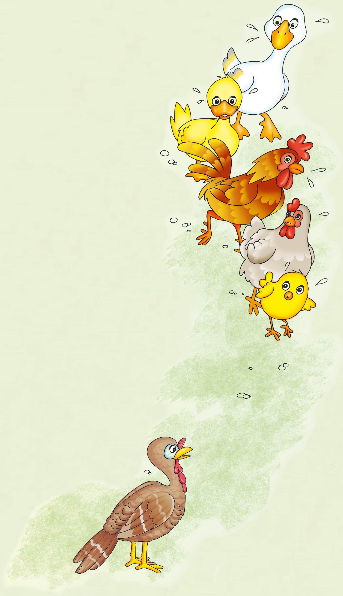

Los cuentos acumulativos
Alumno:
Los cuentos acumulativos
Alumno:
Un día, Pollito Pito fue al bosque
y “pum”, le cayó una manzana
en la cabeza.
―¡Ay, Dios mío! ―gritó
muy asustado―.
¡El cielo se va a caer y el rey
lo debe saber!
Voy deprisa a darle la noticia.
Camina que camina se
encontró con Gallina Fina.
―¡Buenos días, Pollito Pito!
¿A dónde vas tan tempranito?
―¡El cielo se va a caer
y el rey lo debe saber!
Voy deprisa a darle la noticia.
―Pues yo voy también
a decírselo al rey ―dijo
Gallina Fina.
Y allá fueron los dos,
Gallina Fina y Pollito Pito,
camina que camina,
hasta que se encontraron
con Gallo Malayo.
―¡Buenos días, Gallina Fina
y Pollito Pito!
¿A dónde van tan tempranito?
―El cielo se va a caer
y el rey lo debe saber.
Vamos deprisa a darle la noticia.
―Pues yo voy también
a decírselo al rey ―dijo Gallo Malayo.
Y allá fueron los tres, Gallo Malayo,
Gallina Fina y Pollito Pito, camina que camina,
hasta que se encontraron con Pato Zapato.
―¡Buen día, Gallo Malayo, Gallina Fina y Pollito Pito!
¿A dónde van tan tempranito?
―El cielo se va a caer y el rey lo debe saber.
Vamos deprisa a darle la noticia.
―Pues yo voy también a decírselo
al rey ―dijo Pato Zapato.
Y allá fueron los cuatro, Pato Zapato,
Gallo Malayo, Gallina Fina y Pollito Pito,
camina que camina, hasta que se encontraron
con Ganso Garbanzo.
―¡Buenos días, Pato Zapato, Gallo Malayo,
Gallina Fina y Pollito Pito!
¿A dónde van tan tempranito? ―les preguntó.
―El cielo se va a caer y el rey lo debe saber.
Vamos deprisa a darle la noticia.
―Pues yo voy también a decírselo
al rey ―dijo Ganso Garbanzo.
Y allá fueron los cinco, Ganso Garbanzo,
Pato Zapato, Gallo Malayo, Gallina Fina y Pollito Pito
camina que camina hasta que se encontraron
con Pavo Centavo.
―Buen día, Ganso Garbanzo, Pato Zapato,
Gallo Malayo, Gallina Fina y Pollito Pito.
¿A dónde van tan tempranito?
―El cielo se va a caer y el rey lo debe saber.
Vamos deprisa a darle la noticia.
―Pues yo voy también a decírselo al rey —dijo
Pavo Centavo.

Y allá fueron los seis, Pavo Centavo,
Ganso Garbanzo, Pato Zapato, Gallo Malayo,
Gallina Fina y Pollito Pito, camina que camina,
hasta que se encontraron con Zorra Cachorra.
―Buen día, Pavo Centavo, Ganso Garbanzo,
Pato Zapato, Gallo Malayo, Gallina Fina
y Pollito Pito. ¿A dónde van tan tempranito?
―El cielo se va a caer y el rey lo debe saber.
Vamos deprisa a darle la noticia.
Entonces dijo la zorra relamiéndose los bigotes:
―Pues yo voy también a decírselo al rey. Pero
el camino es largo, vamos por el atajo.
Pollito Pito y sus amigos contestaron:
―Zorra Cachorra, no te hagas la buena;
sabemos que el atajo lleva a tu cueva.
Zorra Cachorra, vamos a ver al rey, pero vamos solos.
Y los seis, camina que camina,
llegaron al palacio del rey.
―Escucha, rey amado, el cielo se ha rajado.
Mándalo a componer, porque se va a caer.
El rey les dio las gracias
y a cada uno le regaló una moneda de oro.
 Comprendo para saber
Comprendo para saber
Los cuentos acumulativos son historias que se van armando con una serie de hechos similares que se repiten una y otra vez. El texto puede estar narrado en forma de un poema con rima. La musicalidad y el ritmo de estos cuentos permiten jugar con las palabras de forma creativa, ejercitar y estimular la memoria.